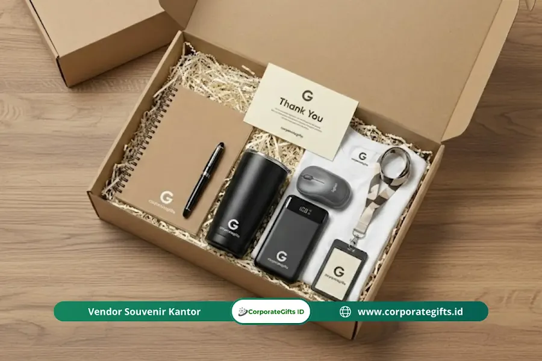

Corporate Gifts ID - Pentingnya welcome kit terletak pada fungsinya sebagai alat onboarding pertama yang menciptakan kesan positif, mempercepat rasa memiliki atau sense of belonging, dan menekan risiko karyawan baru resign dini akibat merasa tidak cocok dengan budaya perusahaan. Paket ini bukan sekadar suvenir, melainkan strategi psikologis yang membuat karyawan baru merasa diterima dan dihargai sejak hari pertama bekerja.
Bayangkan Anda baru saja menyelesaikan proses rekrutmen yang panjang dan melelahkan. Anda telah menghabiskan waktu berbulan-bulan untuk menyortir CV, melakukan wawancara, hingga negosiasi kompensasi yang alot. Kandidat terbaik akhirnya berhasil didapatkan.
Namun, coba bayangkan skenario terburuknya: satu bulan kemudian, surat pengunduran diri mendarat di meja Anda dengan alasan klise, "saya merasa kurang cocok dengan ritme dan budaya di sini."
Kekecewaan itu pasti nyata. Bukan hanya soal biaya rekrutmen yang hangus, tetapi juga waktu dan energi tim yang terbuang percuma. Seringkali, kegagalan retensi di masa awal kerja bukan disebabkan oleh beban teknis pekerjaan, melainkan karena kegagalan perusahaan dalam menciptakan koneksi emosional sejak hari pertama.
Poin Kunci Mengapa Welcome Kit Sangat Vital:
- Kesan Pertama Positif: Menghilangkan kecanggungan hari pertama dan mengirim sinyal bahwa kehadiran mereka sangat dinantikan.
- Advokasi Brand Alami: Mendorong karyawan baru membagikan pengalaman penyambutan mereka di media sosial secara organik.
- Transmisi Nilai Budaya: Memperkenalkan nilai inti perusahaan melalui media fisik berkualitas tinggi dan fungsional.
- Efisiensi Finansial: Biaya satu set welcome kit jauh lebih kecil dibanding kerugian biaya rekrutmen ulang akibat turnover dini.
Mengubah Kecanggungan Menjadi Antusiasme
Mari kita bicara jujur, hari pertama bekerja adalah momen yang penuh tekanan bagi siapa saja. Ada rasa canggung, ragu, dan pertanyaan besar di benak karyawan baru, "apakah saya benar-benar diterima di lingkungan kerja ini?"
Di sinilah pentingnya welcome kit karyawan berperan sebagai jembatan psikologis. Saat karyawan baru melihat sebuah kotak penyambutan yang dikurasi dengan rapi di meja kerja mereka, atau dikirimkan langsung ke alamat rumah bagi pekerja jarak jauh (remote), pesan yang tersampaikan sangat kuat.
Kotak tersebut bukan sekadar tumpukan barang, melainkan sinyal validasi bahwa kedatangan mereka telah dipersiapkan dengan matang. Memberikan paket ini membantu mencairkan suasana (ice breaking). Daripada mereka bingung harus meminjam alat tulis atau mencari botol minum, paket onboarding menyediakan kebutuhan dasar kerja tersebut secara instan.
Transformasi Karyawan Menjadi Duta Merek (Brand Ambassador)
Di era keterbukaan digital saat ini, setiap karyawan adalah mikro-influencer bagi perusahaannya. Ketika mereka menerima paket selamat datang yang estetik dan membanggakan, naluri pertama mereka adalah mengabadikan serta membagikannya di jejaring profesional.
Memberikan onboarding kit yang menarik secara visual adalah strategi employer branding organik yang sangat cerdas. Tanpa diminta, karyawan akan mengunggah foto paket tersebut di LinkedIn atau Instagram Story mereka. Dampak positifnya bagi perusahaan mencakup:
- Employer Branding: Citra kredibilitas perusahaan meningkat sebagai tempat kerja idaman yang menghargai setiap talenta.
- Organic Reach: Identitas brand Anda terpapar luas ke jaringan profesional karyawan yang berisi talenta-talenta potensial berikutnya.
- Validasi Sosial Otentik: Pengalaman nyata dari karyawan memiliki tingkat kepercayaan publik yang jauh lebih tinggi dibanding promosi lowongan berbayar.

Kombinasi notebook kulit agenda, tumbler stainless vacuum, dan kartu ucapan selamat datang dari manajemen.
Menanamkan Nilai Perusahaan Sejak Dini
Bagaimana cara Anda menjelaskan nilai inti (core values) perusahaan agar tidak terdengar seperti ceramah teoretis yang membosankan? Welcome kit adalah instrumen wujud nyatanya. Barang-barang yang Anda masukkan ke dalam paket penyambutan adalah representasi konkret dari filosofi kerja perusahaan.
Jika perusahaan Anda mengusung prinsip keberlanjutan (sustainability), memberikan barang-barang plastik sekali pakai tentu akan terlihat kontradiktif. Sebaliknya, menyematkan produk berbahan ramah lingkungan, seperti tumbler stainless SUS 304, buku catatan berbahan daur ulang, atau tote bag kanvas alami, membuktikan bahwa komitmen tersebut diterapkan dalam operasional harian.
Membangun Rasa Kepemilikan (Sense of Belonging)
Riset manajemen SDM membuktikan bahwa karyawan yang memiliki ikatan emosional kuat dengan tempat kerjanya memiliki tingkat loyalitas dan retensi kerja yang jauh lebih panjang. Welcome kit membantu menumbuhkan sense of belonging ini secara instan.
Saat seorang karyawan baru mengenakan kaos polo berlogo seragam, membawa lanyard resmi, dan menggunakan perlengkapan kantor custom yang sama dengan jajaran pimpinan, batasan hierarki yang kaku menipis. Mereka merasa menjadi bagian dari satu tim solid yang memiliki tujuan bersama.
Efisiensi Proses Onboarding
Selain aspek emosional, welcome kit juga berfungsi praktis sebagai alat penunjang produktivitas. Paket ini dapat memuat buku panduan karyawan (handbook), denah kantor, daftar kontak internal penting, hingga panduan akses sistem digital.
Dengan menyediakan perangkat kerja dasar dan informasi penting dalam satu kemasan terorganisir, HR mengurangi beban pertanyaan berulang pada hari-hari awal, sehingga karyawan dapat lebih cepat mandiri dan siap berkontribusi pada proyek tim.
Investasi Retensi vs Biaya Hangus
Banyak pengambil keputusan masih memandang paket penyambutan sebagai beban pengeluaran semata. Namun, jika Anda membandingkan biaya satu paket welcome kit dengan kerugian rekrutmen ulang (iklan lowongan, waktu interview manajerial, hingga pelatihan ulang), pengadaan kit penyambutan merupakan bentuk mitigasi risiko finansial yang sangat efisien.
Tabel: Dampak Onboarding Tanpa vs Dengan Welcome Kit
Berikut adalah perbandingan konkret dampak pengalaman kerja awal karyawan baru antara perusahaan yang mengabaikan paket penyambutan dengan perusahaan yang mengelolanya secara profesional:
| Parameter Onboarding | Tanpa Welcome Kit | Dengan Welcome Kit Terstruktur |
|---|---|---|
| Kesan Hari Pertama | Canggung, bingung mencari perlengkapan dasar, merasa kurang dipersiapkan. | Hangat, disambut antusias, merasa diakui dan dihargai sejak awal. |
| Adaptasi Budaya Kerja | Lambat, hanya memahami nilai perusahaan lewat teks manual formal. | Cepat, nilai perusahaan terwujud nyata lewat kurasi item di meja kerja. |
| Employer Branding | Pasif, tidak ada momen berkesan untuk dibagikan ke jejaring sosial. | Aktif dan viral secara organik di media sosial seperti LinkedIn dan Instagram. |
| Kesiapan Kerja | Terhambat urusan logistik kecil (alat tulis, buku catatan, akses kartu). | Mandiri seketika dengan perlengkapan lengkap siap pakai di meja. |
| Risiko Resign Dini (<3 Bulan) | Tinggi karena minimnya keterikatan psikologis awal. | Rendah berkat terbangunnya loyalitas dan sense of belonging yang kuat. |
Pertanyaan Seputar Welcome Kit Karyawan (FAQ)
Jangan Sampai Menyesal di Kemudian Hari
Dalam persaingan bisnis modern yang kompetitif, produk teknologi dapat ditiru dan strategi pemasaran dapat dipelajari, namun budaya solid dan loyalitas tim adalah keunggulan kompetitif yang tidak dapat digantikan.
Keputusan untuk menyediakan paket penyambutan karyawan baru mungkin tampak seperti detail kecil hari ini. Namun, langkah sederhana ini menjadi penentu apakah perusahaan Anda sekadar memperkerjakan tenaga kerja, atau menyambut anggota keluarga baru yang siap bertumbuh bersama dalam jangka panjang.